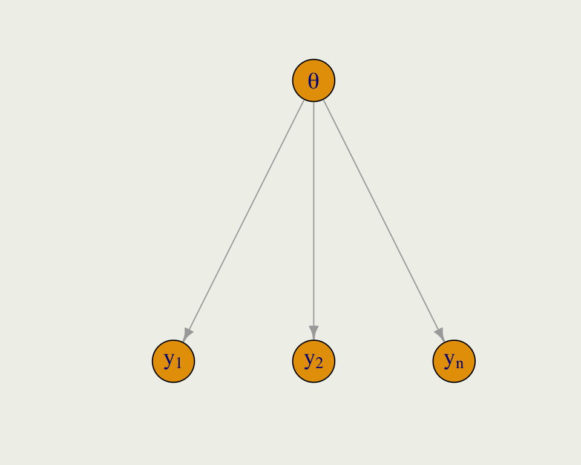

Bayesian Inference
NYU Applied Statistics for Social Science Research
Logistic Regression and Introduction to Hierarchical Models
- GLMs and logistic regression
- Understanding logistic regression
- Simulating data
- Prior predictive simulations
- Example: Diabetes in Pima native americans
- Introducing hierarchical/multi-level models
- Pooling: none, complete, and partial
- Example hierarchical model
\[ \DeclareMathOperator{\E}{\mathbb{E}} \DeclareMathOperator{\P}{\mathbb{P}} \DeclareMathOperator{\V}{\mathbb{V}} \DeclareMathOperator{\L}{\mathcal{L}} \DeclareMathOperator{\I}{\text{I}} \DeclareMathOperator*{\argmax}{arg\,max} \DeclareMathOperator*{\argmin}{arg\,min} \]
Logit and Inverse Logit
- In logistic regression, we have to map from probability space to the real line and from the real line back to probability
- Logistic function (log odds) achieves the former: \[ \text{logit}(p) = \log\left(\frac{p}{1-p}\right) \]
- Inverse logit achieves the latter: \[ \text{logit}^{-1}(x) = \frac{e^x}{1 + e^x} \]
- Notice that \(\text{logit}^{-1}(5)\) is very close to 1 and \(\text{logit}^{-1}(-5)\) is very close to 0
- In R, you can set
logit <- qlogisandinvlogit <- plogis
GLMs and Models 0/1 Outcomes
- Modeling a probability of an event can be framed in the GLM context (just like with counts)
- The general setup is that we have:
- Response vector \(y\) consisting of zeros and ones
- The data model is \(y_i \sim \text{Bernoulli}(p_i)\)
- Linear predictor: \(\eta = \alpha + X\beta\), where \(X\) is a matrix
- In general: \(\E(y | X) = g^{-1}(\eta)\), where \(g^{-1}\)is the inverse link function that maps the linear predictor onto the observational scale
- In particular: \(\E(y_i | x_i) = \text{logit}^{-1}(\alpha + x_i^{\top}\beta) = p_i\)
- \(\text{logit}(p_i) = \eta_i\) and \(p_i = \text{logit}^{-1}(\eta_i)\)
Logistic Posterior
To derive the posterior distribution for Poisson, we consider K regression inputs and independent priors on all \(K + 1\) unknowns: \(\alpha\) and \(\beta_1, \beta_2, ..., \beta_k\)
Bernoulli likelihood is: \(f(y | p) = p^y (1 - p)^{1-y}\) with \(y \in \{0, 1\}\)
And each \(p_i = \text{logit}^{-1}(\alpha + x_i^\top\beta)\) \[ f\left(\alpha,\beta \mid y,X\right) \propto f_{\alpha}\left(\alpha\right) \cdot \prod_{k=1}^K f_{\beta}\left(\beta_k\right) \cdot \\ \prod_{i=1}^N \left(\text{logit}^{-1}(\alpha + x_i^\top\beta) \right)^{y_i} \left(1 - \text{logit}^{-1}(\alpha + x_i^\top\beta)\right)^{1-y_i} \]
In Stan, the likelihood term can be written on a log scale as
y ~ bernoulli_logit_glm(x, alpha, beta)orbernoulli_logit_glm_lupmf(y | x, alpha, beta)
Logistic Simulation
- As before, we can forward simulate data for logistic regression
- We will fit the data and try to recover the parameters
set.seed(123)
logit <- qlogis; invlogit <- plogis
n <- 100
a <- 1.2
b <- 0.4
x <- runif(n, -15, 10)
eta <- a + x * b
Pr <- invlogit(eta)
y <- rbinom(n, 1, Pr)
sim <- tibble(y, x, Pr)
p <- ggplot(aes(x, y), data = sim)
p <- p + geom_point(size = 0.5) +
geom_line(aes(x, Pr), linewidth = 0.2) +
geom_vline(xintercept = 0, color = "red", linewidth = 0.2,
linetype = "dashed", alpha = 1/3) +
geom_hline(yintercept = invlogit(a), color = "red", linewidth = 0.2,
linetype = "dashed", alpha = 1/3) +
geom_hline(yintercept = 0.50, linewidth = 0.2, linetype = "dashed", alpha = 1/3) +
ggtitle(TeX("$y_i \\sim Bernoulli(logit^{-1}(1.2 + 0.4x_i))$")) +
annotate("text", x = -5.5, y = invlogit(a) - 0.02,
label = TeX("Intercept = $logit^{-1}(1.2)$ \\approx 0.77")) +
annotate("text", x = -8, y = 0.53,
label = TeX("$slope_{.5} = \\frac{0.4}{4} = 0.10$")) +
ylab(TeX("$logit^{-1}(1.2 + 0.4x)$")); print(p)Interpreting Logistic Coefficients
- The intercept is the log odds of an event when \(x = 0\), \(\text{logit}^{-1}(1.2) = 0.77\)
- The slope changes depending on where you are on the curve
- When you are near 0.50, the slope of logit(x) is 1/4 and so you can divide your coefficient by 4 to get a rough estimate
- This implies that if we go from \(x = -3\) to \(x = -2\), the probability will increase by about 0.10

Fitting Simulated Data
- Complex and non-linear models may have a hard time recovering parameters from forward simulations
- The process for fitting simulated data may give some insight into the data-generating process and priors
Model Info:
function: stan_glm
family: binomial [logit]
formula: y ~ x
algorithm: sampling
sample: 2000 (posterior sample size)
priors: see help('prior_summary')
observations: 100
predictors: 2
Estimates:
mean sd 10% 50% 90%
(Intercept) 1.5 0.5 0.9 1.5 2.1
x 0.5 0.1 0.4 0.5 0.7
Fit Diagnostics:
mean sd 10% 50% 90%
mean_PPD 0.5 0.0 0.5 0.5 0.6
The mean_ppd is the sample average posterior predictive distribution of the outcome variable (for details see help('summary.stanreg')).
MCMC diagnostics
mcse Rhat n_eff
(Intercept) 0.0 1.0 1132
x 0.0 1.0 1106
mean_PPD 0.0 1.0 1584
log-posterior 0.0 1.0 817
For each parameter, mcse is Monte Carlo standard error, n_eff is a crude measure of effective sample size, and Rhat is the potential scale reduction factor on split chains (at convergence Rhat=1).Generating Probability Data
- To get a sense of the variability in probability we can simulate from the prior distribution on the probability scale
prior_pred_logit <- function(x) {
a <- rnorm(1, mean = 1.2, sd = 0.5)
b <- rnorm(1, mean = 0.4, sd = 0.1)
Pr <- invlogit(a + b * x)
return(Pr)
}
prior_pred <- replicate(50, prior_pred_logit(x)) |>
as.data.frame()
df_long <- prior_pred |>
mutate(x = x) |>
pivot_longer(cols = -x, names_to = "line", values_to = "y")
p <- ggplot(aes(x, y), data = df_long)
p + geom_line(aes(group = line), linewidth = 0.2, alpha = 1/5) +
geom_line(aes(y = Pr), data = sim, linewidth = 0.5, color = 'red') +
ylab(TeX("$logit^{-1}(\\alpha + \\beta x)$")) +
ggtitle(TeX("Simulating from prior $logit^{-1}(\\alpha + \\beta x_i))$"),
subtitle = TeX("$\\alpha \\sim Normal(1.2, 0.5)$ and $\\beta \\sim Normal(0.4, 0.1)$")) Example: Diabetes
- This example comes from US National Institute of Diabetes and Digestive and Kidney Diseases from a population of women who were at least 21 years old, of Pima Indian heritage, and living near Phoenix, Arizona
- It is available as part of the R package
pdp - The outcome \(diabetes\), is an indicator of the disease
- Some other variables are:
| pregnant | glucose | pressure | triceps | insulin | mass | pedigree | age | diabetes |
|---|---|---|---|---|---|---|---|---|
| 6 | 148 | 72 | 35 | NA | 33.6 | 0.627 | 50 | pos |
| 1 | 85 | 66 | 29 | NA | 26.6 | 0.351 | 31 | neg |
| 8 | 183 | 64 | NA | NA | 23.3 | 0.672 | 32 | pos |
| 1 | 89 | 66 | 23 | 94 | 28.1 | 0.167 | 21 | neg |
| 0 | 137 | 40 | 35 | 168 | 43.1 | 2.288 | 33 | pos |
| 5 | 116 | 74 | NA | NA | 25.6 | 0.201 | 30 | neg |
Missing Value Imputation
- This dataset contains missing values
- People typically either delete them or replace them with average values of something like that
- None of these are good approaches
- In R, we recommend a combination of the
micepackage andbrms, which works nicely withmice - From a Bayesian perspective, a missing value is just another unknown parameter in the model, which can be modeled
- Following is an example of a simple missing value estimation from the Stan manual
- Notice, that you need to make an assumption about the model for missing values
Example: Diabetes
- It is well-known that people with high BMI are at risk for Type 2 diabetes
- We can do some exploratory analysis to check this
p1 <- ggplot(pima, aes(x = mass)) +
geom_density(aes(group = diabetes, fill = diabetes, color = diabetes), alpha = 1/5) +
xlab("BMI")
p2 <- pima |>
drop_na() |>
mutate(bmi_cut = cut(mass, breaks = seq(15, 70, by = 5))) |>
group_by(bmi_cut) |>
summarize(p = mean(diabetes == "pos"),
n = n(),
se = sqrt(p * (1 - p) / n),
lower = p + se,
upper = p - se) |>
ggplot(aes(x = bmi_cut, y = p)) +
geom_point() + geom_linerange(aes(ymin = lower, ymax = upper), linewidth = 0.2) +
xlab("BMI range") + ylab("Proportion") +
ggtitle("Proportion of diabetics by BMI +/- 1 SE")Example: Diabetes
- Before building a model, we should scale the variables
library(pdp)
d <- pima |>
as_tibble() |>
select(diabetes, age, pedigree, mass, glucose) |>
drop_na() |> # in an important analysis, you should not do this; instead, impute
mutate(diab = if_else(diabetes == "pos", 1, 0),
age = (age - mean(age)) / 10,
pedigree = (pedigree - mean(pedigree)),
bmi = ((mass - mean(mass)) / 10),
glucose = ((glucose - mean(glucose)) / sd(glucose)))
head(d)# A tibble: 6 7
diabetes age pedigree mass glucose diab bmi
<fct> <dbl> <dbl> <dbl> <dbl> <dbl> <dbl>
1 pos 1.67 0.154 33.6 0.852 1 0.115
2 neg -0.231 -0.122 26.6 -1.21 0 -0.585
3 pos -0.131 0.199 23.3 2.00 1 -0.915
4 neg -1.23 -0.306 28.1 -1.08 0 -0.435
5 pos -0.0312 1.81 43.1 0.492 1 1.06
6 neg -0.331 -0.272 25.6 -0.194 0 -0.685Example: Diabetes
- We will be fitting the following statistical model, where \(x_1\) is the BMI and \(\bar x_1\) is the average BMI in the sample
- We divide by ten so that a unit increase in BMI is a meaningful change
- We need to pick priors on \(\alpha\), and \(\beta_1\)
\[ \begin{eqnarray} y_i &\sim& \text{Bernoulli}(p_i) \\ \eta_i &=& \alpha + \beta_1 \left( \frac{x_{1i} - \bar x_1}{10} \right) \\ p_i &=& \frac{e^{\eta_i}}{1 + e^{\eta_i}} \\ \alpha &\sim& \text{Normal}(\mu_\alpha ,\ \sigma_\alpha) \\ \beta_1 &\sim& \text{Normal}(\mu_\beta , \ \sigma_\beta) \end{eqnarray} \]
Example: Diabetes
- The prior on the intercept corresponds to the log odds of developing diabetes when a person has an average BMI, which is about 29 in the US (which is considered high-risk)
- It is likely that the probability is between 20% and 80%, and so a weakly informative prior can be expressed as \(\text{Normal}(0, 0.5)\)
- Suppose, we also put a weakly informative \(\text{Normal}(0, 1)\) pior on \(\beta_1\)
\[ \begin{eqnarray} y_i &\sim& \text{Bernoulli}(p_i) \\ \eta_i &=& \alpha + \beta_1 \left( \frac{x_{1i} - \bar x_1}{10} \right) \\ p_i &=& \frac{e^{\eta_i}}{1 + e^{\eta_i}} \\ \alpha &\sim& \text{Normal}(0 ,\ 0.5) \\ \beta_1 &\sim& \text{Normal}(0 , \ 1) \end{eqnarray} \]
Example: Diabetes
- Lets perform prior predictive simulation
Model Info:
function: stan_glm
family: binomial [logit]
formula: diab ~ bmi
algorithm: sampling
sample: 2000 (posterior sample size)
priors: see help('prior_summary')
observations: 752
predictors: 2
Estimates:
mean sd 10% 50% 90%
(Intercept) 0.0 0.5 -0.6 0.0 0.6
bmi 0.0 1.0 -1.3 0.0 1.3
MCMC diagnostics
mcse Rhat n_eff
(Intercept) 0.0 1.0 1215
bmi 0.0 1.0 1108
log-posterior 0.0 1.0 932
For each parameter, mcse is Monte Carlo standard error, n_eff is a crude measure of effective sample size, and Rhat is the potential scale reduction factor on split chains (at convergence Rhat=1).Example: Diabetes
Example: Diabetes
- The negative associations are implausible given everything we know about diabetes
- Suppose the risk of diabetes doubles for every 10 \(kg/m^2\) (unverified)
- That would imply average \(\beta_1 \approx 0.7\), since the multiplicative change in odds is \(e^{0.7} \approx 2\)
- We will set the standard deviation to 0.2 to avoid negative effects and allow the odds to be as high as 3.5
\[ \begin{eqnarray} y_i &\sim& \text{Bernoulli}(p_i) \\ \eta_i &=& \alpha + \beta_1 \left( \frac{x_{1i} - \bar x_1}{10} \right) \\ p_i &=& \frac{e^{\eta_i}}{1 + e^{\eta_i}} \\ \alpha &\sim& \text{Normal}(0 ,\ 0.5) \\ \beta_1 &\sim& \text{Normal}(0.7 , \ 0.2) \end{eqnarray} \]
Example: Diabetes
- With new priors, lets repeat the prior predictive simulation
Model Info:
function: stan_glm
family: binomial [logit]
formula: diab ~ bmi
algorithm: sampling
sample: 2000 (posterior sample size)
priors: see help('prior_summary')
observations: 752
predictors: 2
Estimates:
mean sd 10% 50% 90%
(Intercept) 0.0 0.5 -0.6 0.0 0.6
bmi 0.7 0.2 0.4 0.7 1.0
MCMC diagnostics
mcse Rhat n_eff
(Intercept) 0.0 1.0 1215
bmi 0.0 1.0 1108
log-posterior 0.0 1.0 932
For each parameter, mcse is Monte Carlo standard error, n_eff is a crude measure of effective sample size, and Rhat is the potential scale reduction factor on split chains (at convergence Rhat=1).Example: Diabetes
Example: Diabetes
- With this new prior we are ready to fit the model
Model Info:
function: stan_glm
family: binomial [logit]
formula: diab ~ bmi
algorithm: sampling
sample: 2000 (posterior sample size)
priors: see help('prior_summary')
observations: 752
predictors: 2
Estimates:
mean sd 10% 50% 90%
(Intercept) -0.6 0.1 -0.7 -0.6 -0.5
bmi 0.9 0.1 0.8 0.9 1.1
Fit Diagnostics:
mean sd 10% 50% 90%
mean_PPD 0.4 0.0 0.3 0.4 0.4
The mean_ppd is the sample average posterior predictive distribution of the outcome variable (for details see help('summary.stanreg')).
MCMC diagnostics
mcse Rhat n_eff
(Intercept) 0.0 1.0 1315
bmi 0.0 1.0 1299
mean_PPD 0.0 1.0 1651
log-posterior 0.0 1.0 780
For each parameter, mcse is Monte Carlo standard error, n_eff is a crude measure of effective sample size, and Rhat is the potential scale reduction factor on split chains (at convergence Rhat=1).Example: Diabetes
- There are no sampling problems, but we should still check the diagnostics
Example: Diabetes
- We can examine the posterior probability of diabetes among this population (women who were at least 21 years old, and of Pima Indian heritage)
Example: Diabetes
- We can also see the posterior predictive distribution of the probability of diabetes
Example: Diabetes
- As before, we can compute predictions for new data using
posterior_predictor by constructing the posterior distribution directly - Lets say we want to predict the probability of diabetes for a person with BMI = 40
bmi_scaled <- (40 - mean(d$mass)) / 10
yepred_m2 <- posterior_epred(m2, newdata = data.frame(bmi = bmi_scaled))
quantile(yepred_m2, probs = c(0.05, 0.50, 0.95)) |> round(2) 5% 50% 95%
0.47 0.51 0.56 d_m2 <- as_tibble(m2) |>
mutate(log_odds = `(Intercept)` + bmi * bmi_scaled,
prob = invlogit(log_odds),
ypred = rbinom(2e3, size = 1, prob = prob))
d_m2[1:3, ]# A tibble: 3 5
`(Intercept)` bmi log_odds prob ypred
<dbl> <dbl> <dbl> <dbl> <int>
1 -0.676 0.897 0.000969 0.500 1
2 -0.746 0.936 -0.0403 0.490 0
3 -0.682 0.957 0.0402 0.510 0 5% 50% 95%
0.47 0.51 0.56 Example: Diabetes
- We will extend this model and evaluate the model performance
- Here we set weakly informative priors on the other three coefficients
Model Info:
function: stan_glm
family: binomial [logit]
formula: diab ~ bmi + pedigree + age + glucose
algorithm: sampling
sample: 2000 (posterior sample size)
priors: see help('prior_summary')
observations: 752
predictors: 5
Estimates:
mean sd 10% 50% 90%
(Intercept) -0.8 0.1 -0.9 -0.8 -0.7
bmi 0.8 0.1 0.7 0.8 1.0
pedigree 0.8 0.3 0.5 0.8 1.2
age 0.3 0.1 0.2 0.3 0.4
glucose 1.1 0.1 0.9 1.1 1.2
Fit Diagnostics:
mean sd 10% 50% 90%
mean_PPD 0.4 0.0 0.3 0.4 0.4
The mean_ppd is the sample average posterior predictive distribution of the outcome variable (for details see help('summary.stanreg')).
MCMC diagnostics
mcse Rhat n_eff
(Intercept) 0.0 1.0 2663
bmi 0.0 1.0 2623
pedigree 0.0 1.0 2128
age 0.0 1.0 2551
glucose 0.0 1.0 2861
mean_PPD 0.0 1.0 2566
log-posterior 0.1 1.0 747
For each parameter, mcse is Monte Carlo standard error, n_eff is a crude measure of effective sample size, and Rhat is the potential scale reduction factor on split chains (at convergence Rhat=1).ShinyStan Demo
- To use
install.packages("shinystan")andlaunch_shinystan(m3)

Making Additional Improvements
- There is a good reason to believe that glucose and heredity interact so we will include an interaction term
- Age effects are rarely linear and so we include a B-Spline for non-linear age effects
library(splines)
priors <- normal(location = c(0.7, rep(0, 7)),
scale = c(0.2, rep(1, 7)))
m4 <- stan_glm(diab ~ bmi + pedigree +
bs(age, df = 4) +
glucose + glucose:pedigree,
prior_intercept = normal(0, 0.5),
prior = priors,
family = binomial(link = "logit"),
data = d,
refresh = 0,
seed = 123,
iter = 1000)
summary(m4)
Model Info:
function: stan_glm
family: binomial [logit]
formula: diab ~ bmi + pedigree + bs(age, df = 4) + glucose + glucose:pedigree
algorithm: sampling
sample: 2000 (posterior sample size)
priors: see help('prior_summary')
observations: 752
predictors: 9
Estimates:
mean sd 10% 50% 90%
(Intercept) -1.6 0.3 -2.0 -1.6 -1.2
bmi 0.8 0.1 0.6 0.8 0.9
pedigree 0.9 0.3 0.6 0.9 1.3
bs(age, df = 4)1 0.3 0.4 -0.2 0.3 0.8
bs(age, df = 4)2 2.6 0.6 1.9 2.6 3.3
bs(age, df = 4)3 0.7 0.7 -0.2 0.7 1.6
bs(age, df = 4)4 -0.6 0.8 -1.6 -0.6 0.4
glucose 1.1 0.1 1.0 1.1 1.3
pedigree:glucose -0.6 0.3 -0.9 -0.6 -0.3
Fit Diagnostics:
mean sd 10% 50% 90%
mean_PPD 0.4 0.0 0.3 0.4 0.4
The mean_ppd is the sample average posterior predictive distribution of the outcome variable (for details see help('summary.stanreg')).
MCMC diagnostics
mcse Rhat n_eff
(Intercept) 0.0 1.0 1643
bmi 0.0 1.0 2228
pedigree 0.0 1.0 2015
bs(age, df = 4)1 0.0 1.0 1758
bs(age, df = 4)2 0.0 1.0 1999
bs(age, df = 4)3 0.0 1.0 1853
bs(age, df = 4)4 0.0 1.0 2086
glucose 0.0 1.0 1749
pedigree:glucose 0.0 1.0 1633
mean_PPD 0.0 1.0 1912
log-posterior 0.1 1.0 960
For each parameter, mcse is Monte Carlo standard error, n_eff is a crude measure of effective sample size, and Rhat is the potential scale reduction factor on split chains (at convergence Rhat=1).Example: Diabetes
- We can perform model comparison using several methods
- One way is to assess classification accuracy under different probability cut points, which is often done in Machine Learning (ROC/AUC)
- A better way is to use LOO (
looandloo_comparein R)
Introduction to Hierarchical Models
- You can think about hierarchical (sometimes called multi-level or mixed effects) models from a data or parameter perspective, although the parameter view is more fundamental
- The basic idea is that want to model all sources of potential variability in the data
- Data often arrive in clusters, such as students within schools, patients with hospitals, voters within states, and so on
- Since there are local influences, it is often a good idea to assume that units share similar attributes within clusters as well as between clusters
- These two sources of variability are likely different and we should treat them as such
Sleep Data
- Lets look at a classic dataset called
sleepstudyfromlme4package - These data are from the study described in Belenky et al. (2003), for the most sleep-deprived group (3 hours time-in-bed) and for the first 10 days of the study, up to the recovery period
Sleep Data
- To get a better sense of the differences in per-Subject reaction time distributions, we can plot them side by side
Pooling
- Pooling has to do with how much regularization we induce on parameter estimates in each cluster; sometimes this is called shrinkage
- Complete pooling ignores the clusters and estimates a global parameter
- Even though reaction time \(y_i\), belongs to subject \(j\), we ignore the groups and index all the \(y\)s together

Pooling
- Complete pooling is the opposite of no pooling, where we estimate a separate model for each group
- Here, we have \(n\) subjects, and \(y_{ij}\) refers to the \(i\)th reaction time in subject \(j\)
Partial Pooling
- Partial pooling is the compromise between the two extremes
- Like any other parameter in a Bayesian model, the global hyperparameter \(\tau\) is given a prior and is learned from the data
- There could be multiple levels of nesting, say students within schools, within states, etc.
Partial Pooling Compromise
- Posterior \(f(\theta | y)\) is is a compromise between prior \(f(\theta)\) and likelihood \(f(y | \theta)\)
- In the same spirit, the pooled parameter \(\theta_j\) (say reaction time for subject \(j\)) is a compromise between within-subject parameters, and among-subject parameters
\[ \theta_j \approx \frac{\frac{n_j}{\sigma_{y}^2} \overline y_j + \frac{1}{\sigma_{\tau}^2} \overline y_{\tau}} {\frac{n_j}{\sigma_{y}^2} + \frac{1}{\sigma_{\tau}^2}} \]
- \(\overline y_j\) is no-pool estimate of average reaction time for subject \(j\), and \(\overline y_{\tau}\) is complete-pool estimate
- \(n_j\) is the number of observations for subject \(j\), \(\sigma_{y}^2\) is within subject variance of reaction times, and \(\sigma_{\tau}^2\) is the between-subject variance
Sleep Data
- Lets build three models for the sleep data, starting with complete pooling, which is what we have been doing all along
- We will start with the intercept-only model
- These data contain the same number of observations per Subject, which is unusual, so we will make it more realistic by removing 30% of the measurements
Sleep Data
- This is a simple model of the mean reaction time \(\mu\)
\[ \begin{eqnarray} y_{ij} & \sim & \text{Normal}(\mu, \ \sigma^2) \\ \mu & \sim & \text{Normal}(300, 10^2) \\ \sigma & \sim & \text{Exponential}(0.02) \end{eqnarray} \]
Model Info:
function: stan_glm
family: gaussian [identity]
formula: Reaction ~ 1
algorithm: sampling
sample: 10000 (posterior sample size)
priors: see help('prior_summary')
observations: 125
predictors: 1
Estimates:
mean sd 10% 50% 90%
(Intercept) 294.5 4.2 289.2 294.5 299.9
sigma 52.9 3.4 48.7 52.7 57.3
Fit Diagnostics:
mean sd 10% 50% 90%
mean_PPD 294.4 6.3 286.4 294.4 302.5
The mean_ppd is the sample average posterior predictive distribution of the outcome variable (for details see help('summary.stanreg')).
MCMC diagnostics
mcse Rhat n_eff
(Intercept) 0.1 1.0 6347
sigma 0.0 1.0 6890
mean_PPD 0.1 1.0 8264
log-posterior 0.0 1.0 4152
For each parameter, mcse is Monte Carlo standard error, n_eff is a crude measure of effective sample size, and Rhat is the potential scale reduction factor on split chains (at convergence Rhat=1).Sleep Data
- We can compare the predictions from the complete-pooling model to the reaction times of each subject
Sleep Data
- Next, we will fit a no-pool model, which means we are fitting 18 separate models, one for each subject
- You can fit them separately, by making 18 calls to
stan_glm, or you can do in all at once - Since we will not run 18 separate regressions, it will be simpler to estimate one global variance parameter \(\sigma\), which means there is some variance pooling
- This will not affect the inferences for \(\mu_j\) which is our main focus here
\[ \begin{eqnarray} y_{ij} & \sim & \text{Normal}(\mu_j, \ \sigma^2) \\ \mu_j & \sim & \text{Normal}(300, s_j^2) \\ \sigma & \sim & \text{Exponential}(0.02) \end{eqnarray} \]
Sleep Data
m2 <- stan_glm(Reaction ~ Subject - 1,
prior = normal(300, 10, autoscale = TRUE),
prior_aux = exponential(0.02),
family = gaussian,
data = d,
iter = 1000,
refresh = 0,
seed = 123)
summary(m2)
Model Info:
function: stan_glm
family: gaussian [identity]
formula: Reaction ~ Subject - 1
algorithm: sampling
sample: 2000 (posterior sample size)
priors: see help('prior_summary')
observations: 125
predictors: 18
Estimates:
mean sd 10% 50% 90%
Subject308 353.4 17.1 331.0 353.8 375.1
Subject309 213.0 14.6 194.4 212.8 231.8
Subject310 223.9 12.9 207.0 224.0 240.2
Subject330 305.2 12.7 288.6 305.1 321.6
Subject331 310.0 15.3 290.1 310.2 329.3
Subject332 272.0 15.2 252.6 271.8 291.7
Subject333 306.1 16.9 284.3 306.0 327.7
Subject334 296.9 12.2 281.1 297.1 312.5
Subject335 248.6 13.2 231.4 248.8 265.1
Subject337 359.4 14.3 341.2 359.4 378.3
Subject349 282.0 15.6 262.2 282.0 301.1
Subject350 336.6 14.5 317.6 336.7 354.8
Subject351 280.5 18.3 256.7 280.8 303.6
Subject352 346.1 16.5 325.2 345.9 367.1
Subject369 294.7 14.3 276.4 294.6 313.6
Subject370 262.1 14.9 243.7 262.2 281.4
Subject371 295.4 11.7 280.3 295.2 309.9
Subject372 317.6 11.9 302.7 317.6 333.0
sigma 37.4 2.6 34.4 37.2 40.7
Fit Diagnostics:
mean sd 10% 50% 90%
mean_PPD 293.2 4.8 287.1 293.2 299.2
The mean_ppd is the sample average posterior predictive distribution of the outcome variable (for details see help('summary.stanreg')).
MCMC diagnostics
mcse Rhat n_eff
Subject308 0.3 1.0 2742
Subject309 0.3 1.0 3019
Subject310 0.3 1.0 2411
Subject330 0.3 1.0 2263
Subject331 0.3 1.0 2563
Subject332 0.3 1.0 2924
Subject333 0.3 1.0 2560
Subject334 0.2 1.0 2928
Subject335 0.2 1.0 3386
Subject337 0.3 1.0 2424
Subject349 0.3 1.0 2629
Subject350 0.3 1.0 2490
Subject351 0.4 1.0 2272
Subject352 0.3 1.0 2909
Subject369 0.3 1.0 2915
Subject370 0.3 1.0 2594
Subject371 0.2 1.0 2399
Subject372 0.2 1.0 2760
sigma 0.1 1.0 1113
mean_PPD 0.1 1.0 2215
log-posterior 0.1 1.0 719
For each parameter, mcse is Monte Carlo standard error, n_eff is a crude measure of effective sample size, and Rhat is the potential scale reduction factor on split chains (at convergence Rhat=1).Sleep Data
- We can compare the predictions from the no-pooling model to the reaction times of each subject
- What are some of the limitations of this approach?
Building a Hierarchical Model
- \(\mu_j\) is an average reaction time for subject \(j\)
- \(\sigma_y\) is the within-subject variability of reaction times
- \(\mu\) is the global average of reaction times across all subject
- \(\sigma_{\mu}\) is subject to subject variability of reaction times
- Top-level parameters get fixed priors and induce the degree of pooling
Sleep Data
- We can now write out the full model giving priors to all global parameters
- Notice, how the model could be extended if instead of \(\mu_j\) we had our typical linear predictor
\[ \begin{eqnarray} y_{ij} &\sim& \text{Normal}(\mu_j, \ \sigma_y^2) \\ \mu_{j} &\sim& \text{Normal}(\mu, \ \sigma_{\mu}^2) \\ \mu &\sim& \text{Normal}(300, 50^2) \\ \sigma_y &\sim& \text{Exponential}(0.02) \\ \sigma_{\mu} &\sim& \text{Exponential}(1) \end{eqnarray} \]
- This model can also be written such that \(\mu_j = \mu + b_j\), where each \(b_j \sim \text{Normal}(0, \sigma_{\mu}^2)\)
Sleep Data
- (Intercept) = \(\mu\)
- sigma = \(\sigma_y\)
- Sigma[Subject:(Intercept),(Intercept)] = \(\sigma^2_{\mu}\)
- b[(Intercept) Subject:XYZ] = \(b_j\), and so \(\mu_j = \mu + \beta_j\)
Model Info:
function: stan_glmer
family: gaussian [identity]
formula: Reaction ~ (1 | Subject)
algorithm: sampling
sample: 3000 (posterior sample size)
priors: see help('prior_summary')
observations: 125
groups: Subject (18)
Estimates:
mean sd 10% 50% 90%
(Intercept) 294.0 10.2 281.0 294.0 306.9
b[(Intercept) Subject:308] 49.3 18.7 25.7 49.2 73.3
b[(Intercept) Subject:309] -71.1 16.5 -91.8 -71.0 -50.1
b[(Intercept) Subject:310] -62.1 15.5 -82.0 -61.9 -42.4
b[(Intercept) Subject:330] 10.1 15.4 -9.0 9.8 29.3
b[(Intercept) Subject:331] 14.1 17.0 -8.1 14.3 35.6
b[(Intercept) Subject:332] -19.2 16.8 -40.2 -19.5 2.3
b[(Intercept) Subject:333] 9.9 17.5 -12.3 10.0 31.7
b[(Intercept) Subject:334] 3.0 14.9 -15.6 3.0 22.1
b[(Intercept) Subject:335] -40.2 15.6 -60.1 -40.2 -20.2
b[(Intercept) Subject:337] 57.2 16.4 36.5 57.2 78.3
b[(Intercept) Subject:349] -10.5 17.1 -32.2 -10.7 11.1
b[(Intercept) Subject:350] 37.4 15.7 18.1 37.3 57.4
b[(Intercept) Subject:351] -11.0 18.4 -34.5 -10.8 12.8
b[(Intercept) Subject:352] 43.4 18.1 21.0 43.0 67.4
b[(Intercept) Subject:369] -0.1 16.0 -20.7 0.2 20.0
b[(Intercept) Subject:370] -27.5 17.3 -49.3 -27.9 -5.2
b[(Intercept) Subject:371] 0.9 14.8 -17.6 0.7 19.8
b[(Intercept) Subject:372] 21.6 14.8 2.8 21.5 40.8
sigma 37.6 2.6 34.3 37.5 41.0
Sigma[Subject:(Intercept),(Intercept)] 1647.0 718.9 915.6 1502.6 2558.2
Fit Diagnostics:
mean sd 10% 50% 90%
mean_PPD 293.0 4.6 287.0 293.0 299.1
The mean_ppd is the sample average posterior predictive distribution of the outcome variable (for details see help('summary.stanreg')).
MCMC diagnostics
mcse Rhat n_eff
(Intercept) 0.4 1.0 571
b[(Intercept) Subject:308] 0.5 1.0 1444
b[(Intercept) Subject:309] 0.5 1.0 1212
b[(Intercept) Subject:310] 0.4 1.0 1193
b[(Intercept) Subject:330] 0.4 1.0 1195
b[(Intercept) Subject:331] 0.5 1.0 1357
b[(Intercept) Subject:332] 0.4 1.0 1458
b[(Intercept) Subject:333] 0.5 1.0 1406
b[(Intercept) Subject:334] 0.5 1.0 984
b[(Intercept) Subject:335] 0.5 1.0 1200
b[(Intercept) Subject:337] 0.5 1.0 1152
b[(Intercept) Subject:349] 0.5 1.0 1383
b[(Intercept) Subject:350] 0.4 1.0 1234
b[(Intercept) Subject:351] 0.4 1.0 1802
b[(Intercept) Subject:352] 0.5 1.0 1446
b[(Intercept) Subject:369] 0.5 1.0 1161
b[(Intercept) Subject:370] 0.5 1.0 1352
b[(Intercept) Subject:371] 0.5 1.0 1060
b[(Intercept) Subject:372] 0.5 1.0 1014
sigma 0.1 1.0 2069
Sigma[Subject:(Intercept),(Intercept)] 26.5 1.0 734
mean_PPD 0.1 1.0 3059
log-posterior 0.2 1.0 549
For each parameter, mcse is Monte Carlo standard error, n_eff is a crude measure of effective sample size, and Rhat is the potential scale reduction factor on split chains (at convergence Rhat=1).Computing \(\mu_j\)
muj <- m3 |>
spread_draws(`(Intercept)`, b[ ,Subject]) |>
mutate(mu_j = `(Intercept)` + b) |>
select(Subject, mu_j) |>
mean_qi(.width = 0.90)
head(muj)# A tibble: 6 7
Subject mu_j .lower .upper .width .point .interval
<chr> <dbl> <dbl> <dbl> <dbl> <chr> <chr>
1 Subject:308 343. 316. 370. 0.9 mean qi
2 Subject:309 223. 200. 246. 0.9 mean qi
3 Subject:310 232. 211. 253. 0.9 mean qi
4 Subject:330 304. 284. 325. 0.9 mean qi
5 Subject:331 308. 285. 332. 0.9 mean qi
6 Subject:332 275. 251. 298. 0.9 mean qi Sleep Data
- We can see the effects of hierarchical pooling below
- Subjects that are farther away from \(\E(\mu) = 294\)(ms) and the ones that have fewer observations are pooled more towards the global mean
Building a Full Hierarchical Model
- The model we have built so far is for average reaction time only
- What we would like to do, is to build a pooled regression model for the reaction time of each subject
- The mechanics are similar but now we need a model for the slopes and intercepts for each subject, their covariance, and priors
m4 <- stan_glmer(Reaction ~ Days + (Days | Subject),
prior_intercept = normal(300, 50),
prior = normal(0, 2, autoscale = TRUE),
prior_aux = exponential(0.02),
prior_covariance = decov(reg = 1,
conc = 1, shape = 1, scale = 1),
family = gaussian, data = d, iter = 1500,
cores = 4, seed = 123, refresh = 0)
summary(m4)
Model Info:
function: stan_glmer
family: gaussian [identity]
formula: Reaction ~ Days + (Days | Subject)
algorithm: sampling
sample: 3000 (posterior sample size)
priors: see help('prior_summary')
observations: 125
groups: Subject (18)
Estimates:
mean sd 10% 50% 90%
(Intercept) 256.6 7.7 246.9 256.7 266.4
Days 9.0 1.7 6.8 9.0 11.1
b[(Intercept) Subject:308] 41.2 22.4 15.0 38.8 72.3
b[Days Subject:308] 0.9 4.4 -5.0 1.4 6.1
b[(Intercept) Subject:309] -43.6 14.0 -61.7 -43.5 -25.7
b[Days Subject:309] -7.9 3.1 -11.8 -7.8 -4.0
b[(Intercept) Subject:310] -43.0 13.7 -60.4 -42.5 -26.2
b[Days Subject:310] -5.0 2.9 -8.8 -5.0 -1.4
b[(Intercept) Subject:330] 23.3 14.4 5.0 23.2 41.9
b[Days Subject:330] -4.1 2.7 -7.6 -4.2 -0.6
b[(Intercept) Subject:331] 18.6 12.6 2.6 18.5 34.6
b[Days Subject:331] 0.7 2.9 -3.0 0.8 4.2
b[(Intercept) Subject:332] 2.4 13.1 -14.1 2.2 19.2
b[Days Subject:332] -5.1 3.0 -9.0 -5.0 -1.4
b[(Intercept) Subject:333] 11.4 14.5 -6.6 10.7 30.7
b[Days Subject:333] 0.1 3.1 -3.9 0.2 4.0
b[(Intercept) Subject:334] -9.9 13.0 -26.8 -9.7 6.6
b[Days Subject:334] 2.3 2.7 -1.0 2.2 5.7
b[(Intercept) Subject:335] -7.4 14.1 -25.2 -7.8 10.5
b[Days Subject:335] -8.9 2.8 -12.5 -8.9 -5.4
b[(Intercept) Subject:337] 33.0 13.2 16.0 32.8 49.7
b[Days Subject:337] 9.7 3.1 5.8 9.7 13.7
b[(Intercept) Subject:349] -25.5 18.2 -50.2 -24.1 -3.8
b[Days Subject:349] 1.4 3.4 -2.8 1.2 5.9
b[(Intercept) Subject:350] -11.1 16.6 -32.2 -10.4 9.9
b[Days Subject:350] 8.1 3.1 4.2 8.0 12.2
b[(Intercept) Subject:351] 2.4 17.3 -18.4 1.5 24.8
b[Days Subject:351] -4.0 3.8 -8.8 -3.9 0.5
b[(Intercept) Subject:352] 26.0 16.4 5.7 25.4 46.7
b[Days Subject:352] 3.5 3.2 -0.5 3.5 7.5
b[(Intercept) Subject:369] -0.7 13.0 -17.4 -0.6 15.6
b[Days Subject:369] 1.1 2.8 -2.4 1.1 4.6
b[(Intercept) Subject:370] -31.2 14.8 -50.1 -30.8 -12.4
b[Days Subject:370] 4.7 3.6 0.1 4.7 9.4
b[(Intercept) Subject:371] -2.3 12.5 -18.3 -2.3 13.7
b[Days Subject:371] 0.1 2.6 -3.1 0.1 3.3
b[(Intercept) Subject:372] 9.7 12.8 -6.1 9.5 26.0
b[Days Subject:372] 2.3 2.5 -0.9 2.3 5.5
sigma 22.2 1.8 20.0 22.0 24.5
Sigma[Subject:(Intercept),(Intercept)] 843.3 439.5 390.6 753.7 1416.4
Sigma[Subject:Days,(Intercept)] 8.6 64.6 -70.4 13.9 79.6
Sigma[Subject:Days,Days] 44.2 22.6 21.4 39.6 72.3
Fit Diagnostics:
mean sd 10% 50% 90%
mean_PPD 293.3 2.9 289.6 293.3 296.9
The mean_ppd is the sample average posterior predictive distribution of the outcome variable (for details see help('summary.stanreg')).
MCMC diagnostics
mcse Rhat n_eff
(Intercept) 0.2 1.0 1326
Days 0.0 1.0 1395
b[(Intercept) Subject:308] 0.5 1.0 2089
b[Days Subject:308] 0.1 1.0 2190
b[(Intercept) Subject:309] 0.3 1.0 2647
b[Days Subject:309] 0.1 1.0 2656
b[(Intercept) Subject:310] 0.3 1.0 2099
b[Days Subject:310] 0.1 1.0 2209
b[(Intercept) Subject:330] 0.3 1.0 1920
b[Days Subject:330] 0.1 1.0 1767
b[(Intercept) Subject:331] 0.3 1.0 2055
b[Days Subject:331] 0.1 1.0 2328
b[(Intercept) Subject:332] 0.3 1.0 2318
b[Days Subject:332] 0.1 1.0 2490
b[(Intercept) Subject:333] 0.3 1.0 2660
b[Days Subject:333] 0.1 1.0 2089
b[(Intercept) Subject:334] 0.3 1.0 2165
b[Days Subject:334] 0.1 1.0 1884
b[(Intercept) Subject:335] 0.3 1.0 2025
b[Days Subject:335] 0.1 1.0 2125
b[(Intercept) Subject:337] 0.3 1.0 2728
b[Days Subject:337] 0.1 1.0 2569
b[(Intercept) Subject:349] 0.4 1.0 1744
b[Days Subject:349] 0.1 1.0 1996
b[(Intercept) Subject:350] 0.4 1.0 1529
b[Days Subject:350] 0.1 1.0 1472
b[(Intercept) Subject:351] 0.3 1.0 2654
b[Days Subject:351] 0.1 1.0 2187
b[(Intercept) Subject:352] 0.3 1.0 2524
b[Days Subject:352] 0.1 1.0 2224
b[(Intercept) Subject:369] 0.3 1.0 2247
b[Days Subject:369] 0.1 1.0 2225
b[(Intercept) Subject:370] 0.4 1.0 1623
b[Days Subject:370] 0.1 1.0 1856
b[(Intercept) Subject:371] 0.2 1.0 2557
b[Days Subject:371] 0.1 1.0 2073
b[(Intercept) Subject:372] 0.3 1.0 2428
b[Days Subject:372] 0.1 1.0 2246
sigma 0.0 1.0 1572
Sigma[Subject:(Intercept),(Intercept)] 12.3 1.0 1280
Sigma[Subject:Days,(Intercept)] 2.2 1.0 872
Sigma[Subject:Days,Days] 0.7 1.0 1088
mean_PPD 0.1 1.0 3134
log-posterior 0.3 1.0 584
For each parameter, mcse is Monte Carlo standard error, n_eff is a crude measure of effective sample size, and Rhat is the potential scale reduction factor on split chains (at convergence Rhat=1).Building a Full Hierarchical Model
Predicting for a New Subject
- We saw that we can make predictions for reaction times of subjects that were part of the model
- But we can also make predictions for unobserved subjects by drawing from the population distribution, as opposed to subject-specific parameters
new_subj <- data.frame(Days = 0:9,
Subject = as.factor(rep(400, 10)))
ypred_subj <- posterior_predict(m4,
newdata = new_subj)
new_subj |>
add_predicted_draws(m4) |>
ggplot(aes(x = Days)) +
stat_lineribbon(aes(y = .prediction),
width = c(.9, .8, .5),
alpha = 0.25) +
ylab("Reaction time") +
ggtitle("Prediction for an unobserved subject") +
scale_fill_brewer(palette = "Greys")